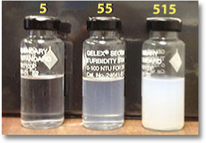
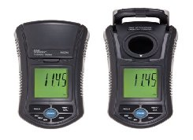

Water Turbidity Measurement With Image
Presented By:Shafiqur Rahman
Registration No.:15602000023
Session:2015-2016
What is Water Turbidity?
- Turbidity is the measure of clarity of a liquid.
- It is an optical characteristic of water.
- Material that causes water to be turbid include clay, silt, very tiny inorganic and organic matter, algae, dissolved colored organic compounds, and plankton and other microscopic organisms.
Water Turbidity Measurement
- Turbidity is usually measured in nephelometric turbidity units (NTU) or Jackson turbidity units (JTLJ)
- It is a measurement of the amount of light that is scattered by material in the water when a light is shined through the water sample.
- The higher the intensity of scattered light, the higher the turbidity.
Turbidity and Human Health
- Drinking water should have a turbidity of 5 NTU/JTU or less.
- Where water is chlorinated, turbidity should be less than 5 NTU/JTU.

Existing System
- Turbidity can be measured using either an electronic turbidity meter or a turbidity tube.

- Both methods have advantages and disadvantages
Proposed System
- Take digital Image of a Water Source.
- Measure the turbidity with the turbidity sensor

- Then training the Software with data
- Then make the detection mode.
Merits and Demerits
Merits
- Low Cost
- Easy to Use
- Time Saving
Demerits
- Hard to Train the system
- Need lots of Data Collection